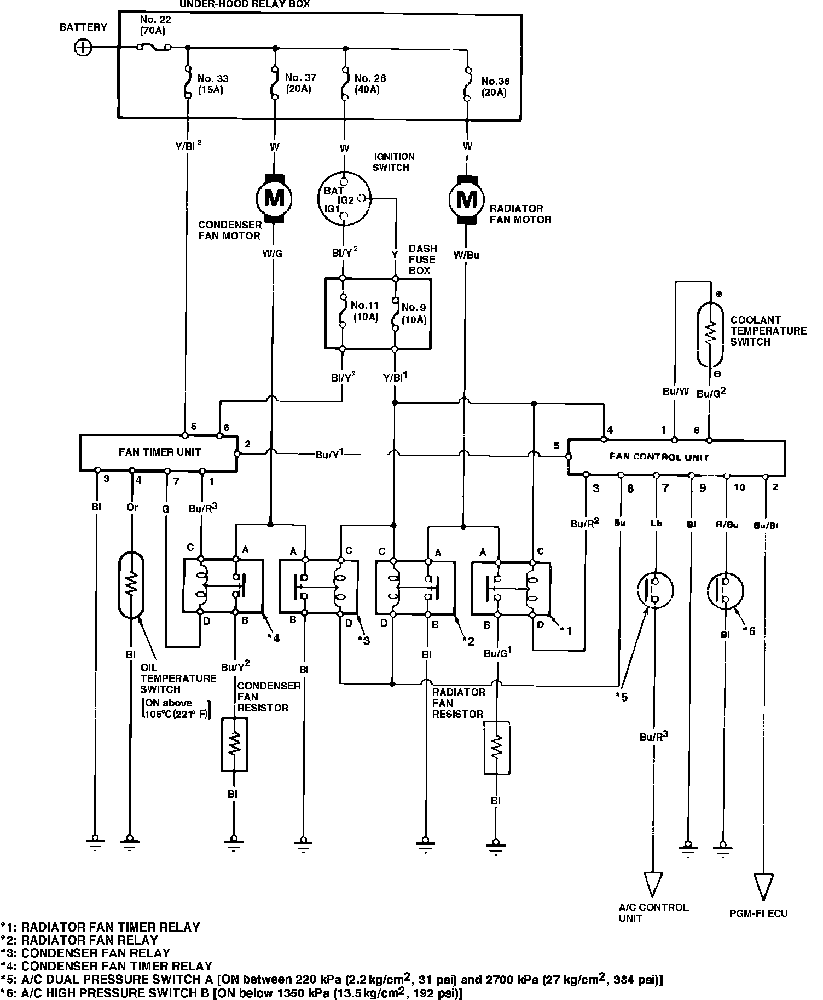

Initial Inspection and Diagnostic Overview
Fig. 12 Electric cooling fan wiring circuit. 1986-87 Legend:

1. If either the cooling fan or condenser fan does not operate, switch relay positions. If problem changes with the relays, replace defective relay. If original problem remains, proceed to step 2.
2. Check condition of fuse Nos. 22, 26, 33, 37 and 38 in engine compartment and fuse Nos. 9, 10 and 11 in passenger compartment fuse panel, Fig. 12, and replace as necessary.
3. Disconnect dual pressure switch electrical connector and connect terminal Lb to ground.
4. Turn ignition switch on and note cooling fan motor and condenser fan motor operation.
5. If fan motors operate, proceed to step 6. If motors do not operate, connect blue wire terminal of fan control unit to ground. If fan now operates, perform troubleshooting of fan control unit as previously described. If fan still fails to operate, proceed to step 6.
6. Connect jumper wire between dual pressure switch connector terminals and note fan operation with ignition switch on.
7. If fan motors now operate, diagnose and repair A/C system pressure or replace dual pressure switch as necessary. If fan motors do not operate, connect blue/red wire terminal of A/C control unit to ground and note fan operation.
8. If fan motors now operate, proceed to step 9. If fans still do not operate, locate and repair open in blue-red wire between dual pressure switch and A/C control unit.
9. Connect blue/yellow wire terminal of A/C control unit to ground and note fan operation with ignition on.
10. If fan motors do not operate, proceed to step 12. If fans operate, connect blue/yellow wire terminal of A/C control unit to ground and note fan operation.
11. If fan motors now operate, replace function control panel and recheck. If fans still do not operate, locate and repair open in blue/yellow wire.
12. Measure resistance between orange and green/red wire terminals of A/C control unit. Resistance should be approximately 1800 ohms at room temperature.
13. Disconnect A/C control unit electrical connector and measure voltage at blue/yellow wire terminal with ignition on. If battery voltage is indicated, replace A/C control unit and retest. If no voltage is indicated, locate and repair open in blue/yellow wire.
14. Connect a suitable jumper wire between black and white/black wire terminals of cooling fan relay, then between black and white/green wire terminals of condenser fan relay and note fan operation.
15. If fan motors do not operate when jumped, locate and repair open between fuse and relay or replace fan motor as necessary. If fan motors operate when jumped, check for battery voltage at the yellow/black wire terminal with ignition on. If voltage is indicated, locate and repair open in blue wire.
Resistor
1. Disconnect resistor electrical connector.
2. Measure resistance between connector terminals.
3. Resistance at approximately 70°F should measure .9-1.1 ohms for radiator fan resistor and .5-.7 ohms for condenser fan resistor.